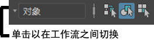

可以限制在您使用选择工具单击或拖动时 Maya 选择的对象或组件的类型。这样，您可以处理复杂模型的特定部分，而不会意外选择其他对象。
通过选择遮罩，可以限制在特定操作中可以选择的对象或组件的类型。
| 目标 | 操作 |
|---|---|
|
在选择对象和选择组件之间切换。 |
使用状态行（工具栏）中的“按对象类型选择”和“按组件类型选择”图标。 在选择遮罩中可用的这些图标取决于用户是处于对象选择模式还是组件选择模式。 |
|
在选择遮罩中打开或关闭对象/组件类型。 |
单击“状态行”(Status Line)（工具栏）的选择遮罩区域中的类型图标。 当图标凹陷时，该类型是可选择的。 |
|
将选择遮罩设置为所有类型。 |
在选择遮罩左侧的弹出菜单图标上按鼠标左键并选择“启用所有对象”(All objects on)。 |
|
清除选择遮罩。 |
在选择遮罩左侧的弹出菜单图标上按鼠标左键并选择“禁用所有对象”(All objects off)。 禁用所有类型时，不能选择任何内容。确保至少重新打开一个类型（如果要选择）。 |
|
基于工作流将选择遮罩设置为对象和组件的预设组合。 |
如果“状态行”(Status Line)（工具栏）上选择模式图标左侧的区域被隐藏，请单击该栏以将其展开。 
在弹出菜单图标上按鼠标左键并选择一个工作流。选择遮罩设置为与该工作流相关的对象和组件。 |